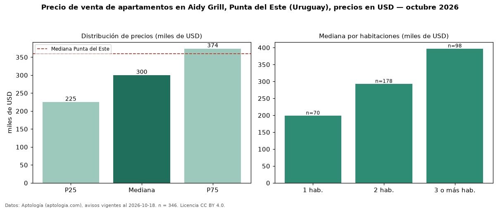

Precio de venta de apartamentos en Aidy Grill, Punta del Este (Uruguay), precios en USD — octubre 2026
En Aidy Grill, Punta del Este (Uruguay), la mediana de precio de venta de apartamentos es USD 300.000, según 346 avisos vigentes. Frente a la mediana de Punta del Este para apartamentos (USD 360.000), queda 17 % por debajo. Por metro cuadrado, la mediana es USD 3.423/m² (n = 300 avisos con área), 5 % por debajo de Punta del Este (USD 3.604/m²). Con el precio por m² de alquiler del mismo segmento (USD 26,92/m² al mes), la rentabilidad bruta implícita es 9,4 % anual (aproximación con medianas de ofertas distintas). El área mediana anunciada es 85 m². El segmento con más oferta es el de 2 habitaciones (178 avisos, mediana USD 292.500); pasar de 1 habitación a 3 o más habitaciones cambia la mediana +100 %. La cuota de mantenimiento o condominio mediana declarada es USD 532 al mes (n = 54). Por precio mediano es el puesto 10 de 14 barrios de Punta del Este con al menos 30 avisos de apartamentos en venta (USD): en la franja media. Datos: Aptología (aptologia.com), CC BY 4.0 — https://www.aptologia.com/uy/venta/punta-del-este/aidy-grill. Archivos: PDF, CSV con las cifras y gráfica PNG.

| Avisos únicos | 346 |
|---|---|
| Percentil 25 | COP 225.000 |
| Mediana | COP 300.000 |
| Percentil 75 | COP 373.750 |
| Mediana por m² | COP 3.422 |
Fuente: avisos vigentes de portales inmobiliarios recopilados por Aptología, deduplicados (mínimo 30 avisos únicos por celda). Precios pedidos, no cerrados. Fecha: 2026-10-18.